건설재료시험기사 (2008-03-02 기출문제)
1과목: 콘크리트공학
1. 양단이 정착된 프리텐션 부재의 한단에서의 활동량이 2mm로 양단활동량이 4mm 일 때 강재의 길이가 10m라면 이 때의 프리스트레스 감소량으로 맞는 것은? (단, 긴장재의 탄성계수(Ep)2×105 MPa)
- 80MPa
- 100MPa
- 120MPa
- 140MPa
(정답률: 알수없음)

2. 서중 콘크리트에 대한 설명으로 잘못된 것은?
- 콘크리트 재료는 온도가 되도록 낮아지도록 하여 사용하여야 한다.
- 수화작용에 필요한 수분증발을 방지하기 위해 촉진제를 사용하는 것을 원칙으로 한다.
- 콘크리트를 타설할 때의 콘크리트 온도는 35℃ 이하여야 한다.
- 콘크리트를 타설하기 전에는 지반, 거푸집 등 콘크리트로부터 물을 흡수할 우려가 있는 부분을 습윤 상태로 유지하여야 한다.
(정답률: 알수없음)
3. 굳지 않은 콘크리트 중의 전 염화물이온량은 몇 kg/m 이하를 원칙으로 하는가?
- 0.10kg/m3
- 0.20kg/m3
- 0.30kg/m3
- 0.40kg/m3
(정답률: 알수없음)
4. 다음 중 철근콘크리트(RC)와 비교할 때 프리스트레스트 콘크리트(PSC)의 장점으로 틀린 것은?
- 변형이 적고 진동하지 않는다.
- 탄력성과 복원성이 우수하다.
- 강재 부식의 위험성이 작다.
- 설계하중하에서 RC보다 지간을 길게 할 수 있어 경제적이다.
(정답률: 알수없음)
5. AE콘크리트에 대한 설명 중 옳지 않은 것은?
- 수밀성 및 화학적 저항성이 증대된다.
- 동일한 슬럼프에 대한 사용수량을 감소시킨다.
- 물-시멘트비가 일정할 경우 공기량이 증가할수록 강도 및 내구성이 증가한다.
- 콘크리트의 유동성을 증가시키고 재료분리에 대한 저항성을 증대시킨다.
(정답률: 알수없음)
6. 콘크리트의 탄성계수에 대한 설명으로 옳은 것은?
- 일반적으로 콘크리트의 탄성계수라 함은 초기 접선계수를 말한다.
- 콘크리트가 물로 포화되어 있을 때의 탄성계수는 건조해 있을 때의 탄성계수보다 작다.
- 콘크리트의 밀도가 클수록 탄성계수 값은 크다.
- 콘크리트의 압축강도가 클수록 탄성계수 값은 작다.
(정답률: 알수없음)
7. fck 는 24MPa 이고, 30회 이상의 실험실적으로부터 결정된 압축강도의 표준편차가 1.4MPa 일 때 배합강도는?
- 21MPa
- 23MPa
- 26MPa
- 29MPa
(정답률: 알수없음)
8. 다음 중 콘크리트의 휨강도 시험방법에 대한 설명으로 잘 못된 것은?
- 공시체는 단면이 정사각형인 각기둥체로 하고, 그 한변의 길이는 굵은골재의 최대치수의 4배 이상이며 10cm이상으로 하여야 한다.
- 콘크리트를 몰드에 채울때는 3층으로 나누어 층당 25회씩 다짐재로 다진다.
- 공시체의 양생 온도는 20±2℃로 하며, 공시체는 몰드를 뗀 후 강도시험을 할 때까지 습윤상태에서 양생을 하여야 한다.
- 공시체가 인장쪽 표면의 지간 방향 중심선의 3등분점의 바깥쪽에서 파괴된 경우에는 그 시험 결과를 무효로 한다.
(정답률: 알수없음)
9. 압축강도에 의한 콘크리트 품질관리에 대한 설명중 적합하지 않은 것은?
- 일반적인 경우 조기재령의 압축강도에 의해 3개의 연속한 압축강도 시험값의 평균치로 한다.
- 1회의 시험치는 현장에서 채취한 시험체 3개의 연속한 압축강도 시험값의 평균치로 한다.
- 시험값에 의하여 콘트리트의 품질을 관리할 경우에는 관리도 및 히스토그램을 사용하는 것이 좋다.
- 압축강도 시험실시의 시기 및 횟수는 1일 1회 또는 구조물의 중요도와 공사규모에 따라 500m3마다 1회, 배합이 변경될 때마다 1회로 한다.
(정답률: 알수없음)
10. 콘크리트에 섬유를 보강하면 섬유의 에너지 흡수능력으로 인해 콘크리트의 여러 역학적 성질이 개선되는데 이들 중 가장 크게 개선되는 성질은?
- 경도
- 전성
- 인성
- 연성
(정답률: 알수없음)
11. 현장에서 콘크리트의 재료를 계량할 때 1회 계량분에 대해 허용오차 기준으로 틀린 것은?(오류 신고가 접수된 문제입니다. 반드시 정답과 해설을 확인하시기 바랍니다.)
- 물은 1% 이하로 한다.
- 시멘트는 1% 이하로 한다.
- 혼화제는 3% 이하로 한다.
- 골재는 2% 이하로 한다.
(정답률: 알수없음)
12. 콘크리트의 동결융해에 대한 설명 중 틀린 것은?
- 다공질의 골재를 사용한 콘크리트는 일반적으로 동결융해에 대한 저항성이 떨어진다.
- 콘크리트의 표층박리(scaling)는 동결융해작용에 의한 피해의 일종이다.
- 동결융해에 의한 콘크리트의 피해는 콘크리트가 물로 포화되었을 때 가장 크다.
- 콘크리트의 초기 동결융해에 대한 저항성을 높이기 위해서는 물-시멘트비를 크게 한다.
(정답률: 알수없음)
13. 콘크리트 양생 중 적절한 수분공급을 하지 않은 경우 발생 할 수 있는 결함은?
- 초기 건조균열이 발생한다.
- 콘크리트의 부등침하에 의한 침하수축균열이 발생한다.
- 시멘트, 골재입자 등이 침하함으로써 물의 분리 상승정도가 증가한다.
- 블리딩에 의하여 콘크리트 표면에 미세한 물질이 떠올라 이음부 약점이 된다.
(정답률: 90%)
14. 콘크리트용 골재의 저장과 취급에 관한 다음 설명중 적절하지 않는 것은?
- 잔골재, 굵은골재 및 종류와 입도가 다른 골재는 각각 구분하여 저장해야 한다.
- 골재의 받아들이기, 저장 및 취급시에는 대소의 알이 분리하지 않도록 주의하고 먼지, 잡물 등이 혼입하지 않도록 해야 한다.
- 겨울에는 빙설의 혼입이나 동결하지 않도록 해야한다.
- 여름에는 일광의 직사를 피할 수 있는 적절한 시설을 하여야 하고, 반드시 표면건조 포화상태로 관리하여야 한다.
(정답률: 알수없음)
15. 시멘트풀의 응결경향에 대한 설명 중 틀린 것은?
- 분말도가 크면 응결이 빨라진다.
- C3A가 많을수록 응결은 지연된다.
- 풍화가 시멘트일수록 응결은 지연된다.
- 석고첨가량이 많을수록 응결은 지연된다.
(정답률: 알수없음)
16. 현장의 골재에 대한 체분석 결과 잔골재 속에 5mm 체에 남는 것이 6%, 굵은골재 속에 5mm체를 통과하는 것이 11%였다. 시방배합표상의 단위잔골재량은 632kg/m3 이며, 단위 굵은골재량은 1176 kg/m3 이다. 현장배합을 위한 단위잔골재량은 얼마인가?
- 522kg/m3
- 537kg/m3
- 612kg/m3
- 648kg/m3
(정답률: 알수없음)
17. 콘크리트의 재료분리 현상을 줄이기 위한 사항이 아닌 것은?
- 잔골재율을 증가시킨다.
- 물-시멘트비를 작게한다.
- 굵은 골재를 많이 사용한다.
- 포졸란을 적당향 혼합한다.
(정답률: 알수없음)
18. 한중(寒中) 콘크리트에 사용하는 재료의 설명 중 옳지 않은 것은?
- 수화열에 의한 균열의 문제가 없는 경우에는 조강 포틀랜드 시멘트의 사용이 효과적이다.
- 시멘트는 냉각되지 않도록 하고, 사용시 직접 가열하여 온도 저하를 방지하는 것이 좋다.
- 골재는 시트 등으로 덮어서 동결이 방지되도록 저장해 야 한다.
- 한중콘크리트에는 AE콘크리트를 사용하는 것을 원칙으로 한다.
(정답률: 알수없음)
19. 콘크리트의 탄산화 반응에 대한 설명 중 잘못 된 것은?
- 경화한 콘크리트의 표면에서 공기중의 탄산가스에 의해 수산화칼슘이 탄산칼슘으로 바뀌는 반응이다.
- 보통포틀랜드시멘트의 탄산화 속도는 혼합시멘트의 탄산화 속도보다 빠르다.
- 이 반응으로 시멘트의 알칼리성이 상실되어 철근의 부식을 촉진 시킨다.
- 온도가 높을수록 탄산화 속도가 빨라진다.
(정답률: 알수없음)
20. 아래 조건과 같은 한중콘크리트의 시고에서 타설이 완료되었을 때의 콘크리트 온도는?
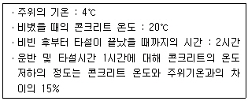
- 14.0℃
- 15.2℃
- 16.4℃
- 18.0℃
(정답률: 알수없음)
2과목: 건설시공 및 관리
21. 아래의 표는 콘크리트공사의 슬럼프 시험결과의 평균치와 범위를 보여준다. 주어진 자료를 이용하여
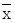
관리도의 (상한관리선, 하한관리선)을 구하면? (단, A2 = 1.023을 이용)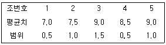
- (8.62, 7.78)
- (9.12, 7.28)
- (8.67, 6.78)
- (9.12, 6.28)
(정답률: 알수없음)
22. 피어기초 중 기계에 의한 시공법이 아닌 것은?
- 시카고(Chicago) 공법
- 베노토(Benoto) 공법
- 어스드릴(Earth drill) 공법
- 리버스써큐레이션(Reverse Circulation)공법
(정답률: 알수없음)
23. 공사 기간의 단축과 연장은 비용경사(cost slope)를 고려하여 하게 되는데 다음 표를 보고 비용 경사를 구하면?
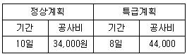
- 10,000
- 5,000
- -5,000
- -10,000
(정답률: 알수없음)
24. Tandem Rollr의 다짐작업에 가장 적합한 것은 다음 중 어느 것인가?
- 아스팔트 포장의 마무리
- 함수비가 많은 성토부
- 쇄석
- 사질토
(정답률: 알수없음)
25. TBM(Tunnel Boring Machine)에 의한 굴착의 특징이 아닌 것은?
- 안정성(安定性)이 높다.
- 여굴에 의한 낭비가 적다.
- 노무비 절약이 가능하다.
- 복잡한 지질의 변화에 대응이 용이하다.
(정답률: 알수없음)
26. (복원 오류로 문제 및 보기 내용이 정확하지 않습니다. 내용을 아시는분께서는 오류 신고를 통하여 내용 작성부탁 드립니다. 정답은 2번입니다.)
- 복원중
- 복원중
- 복원중
- 복원중
(정답률: 알수없음)
27. 다음 교량가설법 중 비계를 이용하는 공법이 아닌 것은?
- 벤트(Bent) 공법
- 이렉션 트러스(Election truss)
- 캔틸레버(Cantilever)식 가설공법
- 새들(sddle)공법
(정답률: 알수없음)
28. 아스팔트 포장의 안정성 부족으로 인해 발생하는 대표적인 파손은 소성변형(바퀴자국, 측방유동)이다. 최근 우리나라의 도로에서 이 소성변형이 문제가 되고 있는데, 다음 중 그 원인이 아닌 것은?
- 여름철 고온 현상
- 중차량 통행
- 수막현상
- 표시된 차선을 따라 차량이 일정위치로 주행
(정답률: 알수없음)
29. 셔블계 굴삭기 가운데 수중작업에 많이 쓰이며, 협소한 장소의 깊은 굴착에 가장 적합한 건설기계는?
- 클램쉘
- 파워셔블
- 파일드라이브
- 어스드릴
(정답률: 알수없음)
30. 투수성이 큰 모래를 특수섬유질의 망대속에 투입하여 연약지반내 모래기둥을 형성한 후 간극수를 탈수시켜 연약지반을 개량하는 공법으로 동시에 4공 정도의 모래기둥시공이 가능한 공법은?
- 샌드콤팩션파일 공법
- 샌드드레인 공법
- 섬유드레인 공법
- 팩드래인 공법
(정답률: 알수없음)
31. 다음 중에서 물의 월류에 가장 약한 댐은?
- 중력댐
- 아치댐
- 부벽식댐
- 흙댐
(정답률: 알수없음)
32. AASHTO(1986)설계법에 의해 아스팔트 포장의 설계시 두께지수(SN, Structure Number)결정에 이용되지 않는 것은?
- 각층의 상대강도계수
- 각층의 두께
- 각층의 배수계수
- 각층의 침입도지수
(정답률: 알수없음)
33. 토적곡선(mass curve)의 성질에 대한 설명 중 옳지 않은 것은?
- 유토곡선이 기선 위에서 끝나면 토량이 절토로의 변이점이다.
- 곡선의 저점은 성토에서 절토로의 변이점이다.
- 동일단면 내에서 횡방향 유용토는 제외되었으므로 동일 단면내의 절토량과 성토량을 구할 수 없다.
- 교량 등의 토공이 없는 곳에는 기선에 평행한 직선으로 표시한다.
(정답률: 알수없음)
34. 다음과 같은 절토공사에서 단면적은 얼마인가?
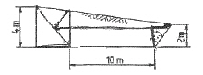
- 32m2
- 40m2
- 51m2
- 55m2
(정답률: 알수없음)
35. 불도저 뒤에 날을 달아 유압으로 지반에 날을 박고 끌어당기면서 불도저를 전진시켜 암석을 굴착하는 공법은 어느것인가?
- 리퍼공법
- 번컷
- 스테밍공법
- OD공법
(정답률: 알수없음)
36. 내ㆍ외관을 동시에 타격하여 소정의 깊이에 도달하면 내관을 뽑아내고 외관안에 콘크리트를 치는 방법으로 외관은 지중에 남겨두는 현장 콘크리트 말뚝은?
- 강널말뚝
- PIP 말뚝
- 레이몬드말뚝
- 페데스탈말뚝
(정답률: 알수없음)
37. 앙거의 매설을 위한 기초공세 대한 설명 중 옳지 않은 것은?
- 기초가 다소 불량한 곳은 침목, 콘크리트 침목 등의 기초공을 해야 한다.
- 기초가 양호하면 암거를 직접 매설하여도 된다.
- 기초바닥이 매우 불량할때는 말뚝기초를 하여야 한다.
- 부등침하의 우려가 있는 기초에는 잡서그 조약돌 등을 포설한다.
(정답률: 34%)
38. 댐 콘크리트에 대한 설명으로 옳은 것은?
- 가능한 빨리 소요강도를 얻기 위해 알루미나 시멘트를 사용한다.
- 콘크리트 단위 중량은 2.3kg/m3이하로 한다.
- 수화열이 적은 시멘트를 사용하도록 한다.
- 인공냉각시 파이프 쿨링은 적당하지 않다.
(정답률: 알수없음)
39. 토량의 변화율(L, C)을 나타낸 식으로 옳은 것은?
- L = 흐트러진 상태의 토량/자연상태의 토량, C = 다져진 상태의 토량/자연상태의 토량
- L = 다져진 상태의 토량/자연상태의 토량, C = 흐트러진 상태의 토량/자연상태의 토량
- L = 흐트러진 상태의 토량/자연상태의 토량, C = 자연상태의 토량/다져진 상태의 토량
- L = 자연상태의 토량/흐트러진 상태의 토량, C = 다져진 상태의 토량/자연상태의 토량
(정답률: 알수없음)
40. 돌쌓기의 설명 중에서 틀린 것은?
- 찰쌓기는 뒷채움에 콘크리트를 사용한다.
- 메쌓기는 콘크리트를 사용하지 않는다.
- 메쌓기는 쌓는 높이의 제한을 받지 않는다.
- 일반적으로 찰쌓기는 메쌓기보다 높이 쌓을 수 있다.
(정답률: 알수없음)
3과목: 건설재료 및 시험
41. 철근 기호 SD 350 이란 무엇을 뜻하는가?
- 원형 철근을 말하며 350은 인장 강도가 350N/mm2이상을 뜻한다.
- 원형 철근을 말하며 350은 항복점이 350N/mm2이상을 뜻한다.
- 이형 철근을 말하며 350은 인장강도가 350N/mm2이상을 뜻한다.
- 이형 철근을 말하며 350은 항복점이 350N/mm2이상을 뜻한다.
(정답률: 알수없음)
42. 일반적으로 조강 포틀랜드 시멘트를 사용할 경우 재령 몇일에서 보통 포틀랜드 시멘트의 재령 28일 강도를 나타내는가?
- 1일
- 3일
- 7일
- 14일
(정답률: 알수없음)
43. 건정성 여부를 확인하기 위한 비파괴시험의 종류로 맞지 않는 것은?
- 코아 채취법
- 슈미트 해머법
- 초음파를 이용한 방법
- 탄성파 방법
(정답률: 75%)
44. 아스팔트 혼합물의 마샬 안정도시험은 굵은골재 최대치수가 얼마 이하의 가열 혼합물에 대하여 적용하는가?
- 10mm
- 15mm
- 20mm
- 25mm
(정답률: 알수없음)
45. 역청재료의 침입도 시험에서 중량 100g의 표준침이 5초 동안에 5mm 관입했다면 이 재료의 침입도는 얼마인가?
- 5
- 25
- 50
- 500
(정답률: 50%)
46. 굵은골재의 최대치수란 질량비로 몇% 이상 통과시키는 체중에서 최소 치수의 체눈을 공칭 치수로 나타낸 것인가?
- 80%
- 85%
- 90%
- 95%
(정답률: 알수없음)
47. 다음 혼화재료 중 콘크리트의 워커빌리터를 개선하는 효과가 없는 것은?
- 촉진제
- 포졸란
- AE제
- 감수제
(정답률: 67%)
48. 석재의 일반적 성질에 관한 설명중에서 틀린 것은?
- 암석의 압축강도가 50MPa이상을 경석, 10MPa이상~50MPaal만을 준경석, 10MPaal만을 연석이라 한다.
- 암석의 구조에서 암석특유의 천연적으로 갈라진 금을 철리(哲理), 퇴적암 이나 변성암에서 나타나는 평행의 절리를 층리(層理)라 한다.
- 석재는 강도중에서 압축강도가 제일 크며, 인장, 휨 및 전단강도는 적기 때문에 구조용으로 사용할 경우 주로 압축력을 받는 부분에 사용된다.
- 석재는 열에 대한 양도체이기 때문에 열의 분포가 균일하며, 1000℃이상의 고온으로 가열하여도 잘 견디는 내화성 재료이다.
(정답률: 알수없음)
49. 다음 중 무연화약의 주성분인 것은 어느 것인가?
- 유황(S)
- 니트로셀롤로오스(Nitrocellulose)
- 목탄(C)
- 초석(KNO3)
(정답률: 알수없음)
50. 아스팔트의 성질에 대한 설명 중 틀린 것은?
- 아스팔트의 비중은 침입도가 작을수록 작다.
- 아스팔트의 비중은 온도가 상승할수록 저하된다.
- 아스팔트는 온도에 따라 컨시스턴시가 현저하게 변화된다.
- 아스팔트의 강성은 온도가 높을수록, 침입도가 클수록 작다.
(정답률: 알수없음)
51. 대폭파 또는 수중폭파를 동시에 실시하기 위해 뇌관 대신에 사용하는 것은?
- DDNP
- 도폭선
- 도화전
- 데토릴
(정답률: 알수없음)
52. 콘크리트용 혼화재료인 플라이애시에 대한 다음 설명 중 틀린 것은?
- 플라이애시는 보존중에 입자가 응집하여 고결 하는 경우가 생기므로 저장에 유의하여야 한다.
- 플라이애시는 인공포졸란 재료로 잠재수경성을 가지고 있다.
- 플라이애시는 워커빌리티 증가 및 단위수량 감소효과가 있다.
- 플라이애시 중의 미연탄소분에 의해 AE제 등이 흡착되어 연행공기량이 현저히 감소한다.
(정답률: 알수없음)
53. 합판의 특성을 설명한 것으로 잘못된 것은?
- 목재를 완전히 이용할 수 있고 목재의 결점을 보완할 수 있다.
- 일반 목재에 비하여 내구성, 내습성이 작으나 접합하기가 쉽다.
- 팽창, 수축 등에 의한 결점이 없고 방향에 따른 강도의 차이가 없다.
- 제품이 규격화되어 사용에 능률적이다.
(정답률: 46%)
54. 인공경량 골재에 대한 설명 중 옳은 것은?
- 인공경량 골재의 품질을 밀도로 나타낼 때 절대건조상태의 밀도를 사용한다.
- 밀도는 입경에 따라 다르며 입경이 클수록 작다.
- 인공경량골재는 순간 흡수량이 비교적 크기 때문에 콘시스텐시를 상승시킨다.
- 인공경량골재에는 응회암, 경석화산자갈 등이 있다.
(정답률: 알수없음)
55. 포졸란을 혼합한 콘크맅의 설명으로 틀린 것은?
- Workability가 좋고 재료 분리가 적다.
- 수밀성이 크다.
- 내수성, 내습성이 우수하다.
- 열에 의한 체적변화가 작다.
(정답률: 알수없음)
56. 플라스틱의 일반적인 성질에 대한 설명으로 틀린것은?
- 탄성계수가 작다.
- 강이나 콘크리트에 비하여 가볍기 때문에 이를 사용하는 구조물의 경량화가 가능하다.
- 내수성, 내습성이 우수하다.
- 열에 의한 체적변화가 가능하다.
(정답률: 알수없음)
57. 중량 500g인 절대건조상태 골재를 24시간 물에 침지하여 측정한 골재의 중량은 520g이었다. 이 골재의 흡수율이 2%인 경우 골재의 표면수율로 맞는 것은?(오류 신고가 접수된 문제입니다. 반드시 정답과 해설을 확인하시기 바랍니다.)
- 연행공기 1% 증가는 콘크리트의 슬럼프를 약 25mm정도 증가시키는 워커빌리티 개선효과를 나타낸다.
- 물의 동결에 의한 팽창응력을 기포가 흡수함으로써 콘크리트의 동결융해에 대한 저항성을 개선한다.
- 갇힌공기와는 달리 AE제에 의한 연행공기는 그 양이 다소 많아져도 강도손실을 일으키지 않는다.
- 연행공기량은 운반 및 진동다짐과정에서 약간 감소하는 경향을 나타낸다.
(정답률: 알수없음)
58. 시멘트의 응결시험 방법으로 옳은 것은?
- 길모아침에 의한 방법
- 오오토 클레이브 방법
- 블레인 방법
- 폴리아미드수지
(정답률: 알수없음)
59. 다음의 합성수지 중 발포제품으로 만들어 단열재로 사용되는 것은?
- 염화비닐수지
- 멜라민수지
- 폴리스틸렌수지
- 폴리아미드수지
(정답률: 알수없음)
60. AE제의 기능에 대한 다음 설명 중 맞지 않는 것은?
- 프리로딩공법
- 샌드드레인공법
- 진공압밀공법
- 바이브로 플로테이션공법
(정답률: 알수없음)
4과목: 토질 및 기초
61. 표준관입시험에 관한 설명 중 옳지 않은 것은?
- 표준관입시험의 N값으로 모래지반의 상대밀도를 추정할 수 있다.
- N값으로 점토지반의 연경도에 관한 추정이 가능하다.
- 지층의 변화를 판단할 수 있는 시료를 얻을 수있다.
- 모래지반에 대해서도 흐트러지지 않은 시료를 얻을 수 있다.
(정답률: 알수없음)
62. 굳은 점토지반에 앵커를 그라우팅하여 고정시켰다. 고정부의 길이가 5m, 직경 20cm, 시추공의 직경은 10cm 이었다. 점토의 비배수전단강도(Cu) = 1.0kg/cm2, ø = 0°이라고 할 때 앵커의 극한 지지력은? (단, 표면마찰계수는 0.6으로 가정한다.)
- 9.4 ton
- 15.71 ton
- 18.8 ton
- 31.3 ton
(정답률: 알수없음)
63. 흙속에 있는 한 점의 최대 및 최소 주응력이 2.0kg/cm2, 2.0kg/cm2일 때, 최대 주응력면과 30°를 이루는 평면상의 전단응력을 구한 값은?
- 0.1⑤kg/cm2
- 0.215kg/cm2
- 0.323kg/cm2
- 0.433kg/cm2
(정답률: 알수없음)
64. 그림과 같은 모래층에 널말뚝을 설치하여 물막이공 내의 물을 배수하였을대, 분사현상이 일어나지 않게 하려면 얼마의 압력을 가하여야 하는가? (복원 오류로 문제 및 보기 내용이 정확하지 않습니다. 내용을 아시는분께서는 오류 신고를 통하여 내용 작성부탁 드립니다. 정답은 4번입니다.)
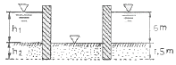
- (복원중)
- (복원중)
- (복원중)
- (복원중)
(정답률: 알수없음)
65. 다음 그림과 같은 Sampler에서 면적비는 얼마인가?
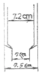
- 5.97%
- 14.62%
- 5.80%
- 14.80%
(정답률: 알수없음)
66. 다짐 시험에서 동일한 다짐에너지(compactive effort)를 가했을 때 건조밀도가 큰 것에서 작아지는 순서로 되어 있는 것은?
- SW ＞ ML ＞ CH
- SW ＞ CH ＞ ML
- CH ＞ ML ＞ SW
- ML ＞ CH ＞ SW
(정답률: 알수없음)
67. 무게 3 ton인 단동식 증기 hammer를 사용하여 낙하고 1.2m에서 pile을 타입할 때 1회 타격당 최종침하량이 2cm이었다. Engineering News 공식을 사용하여 허용 지지력을 구하면 얼마인가?
- 13.3t
- 26.7t
- 80.8t
- 160t
(정답률: 알수없음)
68. 사면안정계산에 있어서 Fellenius법과 간편 Bishop법의 비교 설명 중 틀린 것은?
- Fellenius법은 절편의 양쪽에 작용하는 합력은 0(Zero)이라고 가정한다.
- 간편 Bishop법은 절편의 양쪽에 작용하는 연직 방향의 합력은 0(zero)이라고 가정한다.
- Fellenius법은 간편 Bishop법보다 계산은 복잡하지만 계산결과는 더 안적측이다.
- 간편 Bishop법은 안전율을 시행착오법으로 구한다.
(정답률: 알수없음)
69. 투수성 토층사이에 두께 7m의 점토층이 끼어 있다. 이와 같은 지반위에 구조물을 축조하니 압밀 현상이 일어났으며 이 때의 압밀계수는 6.4×10-4cm2/sec 이었다. 이 구조물의 침하량이 최종침하량의 50%에 달하는데 요하는 시간은?
- 365일
- 437일
- 550일
- 613일
(정답률: 55%)
70. 현장 흙의 모래치환법에 의한 밀도시험을 한 결과파낸 구멍의 부피는 2000cm3 이고 파낸 흙의 중량이 3240g이며 함수비는 8%였다. 이 흙의 간극비는 얼마인가? (단, 이 흙의 비중은 2.70이다.)
- 0.80
- 0.76
- 0.70
- 0.66
(정답률: 알수없음)
71. 그림과 같은 옹벽배면에 작용하는 토압의 크기를 Rankine의 토압공식으로 구하면?
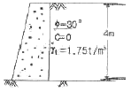
- 3.2t/m
- 3.7t/m
- 4.7t/m
- 5.2t/m
(정답률: 알수없음)
72. 그림에서 A점의 유효응력 σ' 을 구하면?
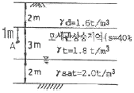
- σ' = 4.0t/m2
- σ' = 4.5t/m2
- σ' = 5.4t/m2
- σ' = 5.8t/m2
(정답률: 알수없음)
73. 직접전단 시험을 한 결과 수직응력이 12kg/cm2일 때 전단저항이 5kg/cm2, 또 수직응력이 24kg/cm2일 때 전단 저항이 7kg/cm2이었다. 수직응력이 30kg/cm2일 때의 전단저항은 약 얼마인가?
- 6kg/cm2
- 8kg/cm2
- 10kg/cm2
- 12kg/cm2
(정답률: 알수없음)
74. 통일분류법(統一分類法)에 의해 SP로 분류된 흙의 설명으로 옳은 것은?
- 모래질 실트를 말한다.
- 모래질 점토를 말한다.
- 압축성이 큰 모래를 말한다.
- 입도분포가 나쁜 모르를 말한다.
(정답률: 알수없음)
75. 아래 그림과 같은 흙의 3상도에서 흙입자만의 부피(Vs)는 얼마나 되겠는가? (단, 이 흙의 비중은 2.65이고, 항수비는 25%이다.)
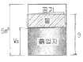
- 2.4m3
- 2.72m3
- 3.12m3
- 3.40m3
(정답률: 알수없음)
76. 그림과 같은 지반에서 하중으로 인하여 수직응력(△σ1)이 1.0kg/cm2이 증가되고 수평응력(△σ3)이 0.5kg/cm2이 증가되었다면 간극수압은 얼마나 증가되었는가? (단, 간극수압계수 A = 0.5 이고 B = 1이다.)
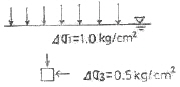
- 0.50kg/cm2
- 0.75kg/cm2
- 1.00kg/cm2
- 1.25kg/cm2
(정답률: 알수없음)
77. 수직방향의 투수계수가 4.5×10-5m/sec인 균질하고 비등방(非等方)인 흙댐의 유선망을 그린 결과 유로(流路)수가 4개이고 등수두선의 간격수가 18개 이었다. 단위길이(m)당 침투수량은?
- 1.1×10-7m3/sec
- 2.3×10-7m3/sec
- 2.3×10-8m3/sec
- 1.5×10-8m3/sec
(정답률: 알수없음)
78. 다음의 지반개량공법 중 압밀배수를 주로 하는 공법이 아닌 것은?
- 프리로딩공법
- 샌드드레인공법
- 진공압밀공법
- 바이브로 플로테이션공법
(정답률: 알수없음)
79. 토목 섬유의 주요기능 중 옳지 않은 것은?
- 보강(Reinforcement)
- 배수(Drainage)
- 댐핑(Damping)
- 분리(Separation)
(정답률: 알수없음)
80. 포화단위중량이 1.8t/m3인 흙에서의 한계동수경 사는 얼마인가?
- 0.8
- 1.0
- 1.8
- 2.0
(정답률: 알수없음)
ΔP = (ΔL/L) × Ep
여기서 ΔL은 프리스트레스 감소량, L은 강재의 길이, Ep은 탄성계수이다.
양단이 정착된 프리텐션 부재의 한단에서의 활동량이 2mm로 양단활동량이 4mm 일 때, 한단당 활동량은 2mm/2 = 1mm 이다. 따라서 전체 활동량은 1mm × 10단 = 10mm 이다.
양단활동량이 4mm 이므로, 프리스트레스는 4/10 = 0.4배가 된다. 따라서 ΔL/L = 0.4 이다.
강재의 길이 L은 10m 이므로, ΔP = (0.4) × (2×105) = 80MPa 이다.
따라서 정답은 "80MPa" 이다.